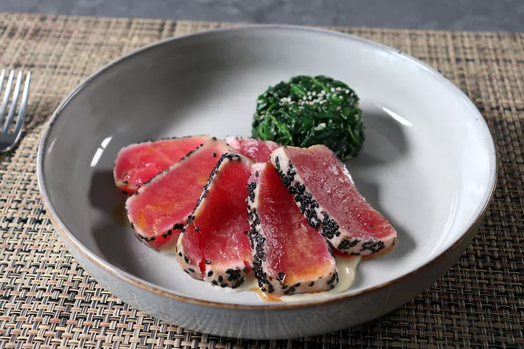

Sesame Seared Tuna and Spinach Salad

Description
This recipe is dedicated to the other side of the sushi bar menu, where after you work your way through the
nigiri and sushi rolls, you discover things like tuna tataki and cold, Japanese-style spinach salad. While I
can't promise authenticity, I can promise this is fast and simple to make — and I think, extremely delicious.
Ingredients
For the Spinach Salad:
- ½ pound baby spinach leaves
- 3 tablespoons white sesame seeds
- 1 tablespoon white sugar
- 1 tablespoon soy sauce, or to taste
- ½ teaspoon mirin
For the Miso Mayo Sauce:
- ¼ cup mayonnaise
- 2 teaspoons white miso paste
- 1 tablespoon seasoned rice vinegar
For the Seared Tuna:
- 2 (5 ounce) sushi-grade ahi tuna steaks
- salt to taste
- 2 tablespoons black sesame seeds
- 2 teaspoons vegetable oil
- 1 tablespoon prepared ponzu sauce
Steps
- Place spinach in a dry pot set over medium-high heat and cook, stirring, until it just begins to wilt, 1 to
2 minutes. Transfer into a strainer to cool.
- While spinach cools, toast white sesame seeds in a dry pan over medium heat until light golden brown.
Transfer into a mortar and pestle and crush into a very coarse paste, leaving some seeds whole. Add white
sugar, soy sauce, and mirin. Stir with a wooden spoon to combine and reserve.
- Transfer cooled spinach to a towel and squeeze out any excess liquid. Chop roughly and add to a mixing bowl.
Add the dressing and mix well. Cover and chill thoroughly before serving.
- Mix mayonnaise, miso paste, and rice vinegar together for miso mayo sauce. Place in the refrigerator until
needed.
- Lightly salt tuna steaks, and then coat all sides well with as many sesame seeds as you like, pressing them
lightly as you do.
- Brush a nonstick pan with oil and place over medium heat. Sear tuna steaks in the hot pan for 30 to 45
seconds on each side, as well as each edges.
- Slice and place tuna over the miso sauce. Brush tuna with ponzu and serve with spinach salad on the side.